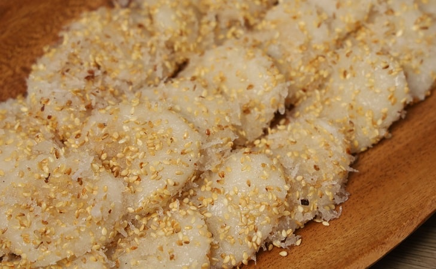

Palitaw (Sweet Rice Cake)

This sticky, chewy dessert is very easy to make and can also be served as a snack.
Ingredients
- 1 cup glutinous rice flour (malagkit)
- ½ cup white sugar
- ½ cup water
- 2 tablespoons sesame seeds
- 4 ounces grated coconut
- 1 teaspoon salt
Directions
- Mix the rice flour, 1/2 cup sugar, and the water together in a bowl into a soft dough; set aside.
- Stir 1/2 cup sugar and sesame seeds together in a small bowl.
Toss the coconut with the salt together in a separate bowl.
- Bring a large pot of water to a boil.
- Take a portion of the soft dough and roll it into a ball between the palms of your hands. Pull lengthwise and shape into a tongue.
Drop into the boiling water. The cake is ready when it floats. Scoop it out with a strainer and roll it in the sugar and sesame seed mixture.
Place it on a serving platter. Repeat with the rest of the dough. Top the cakes with coconut and serve warm.